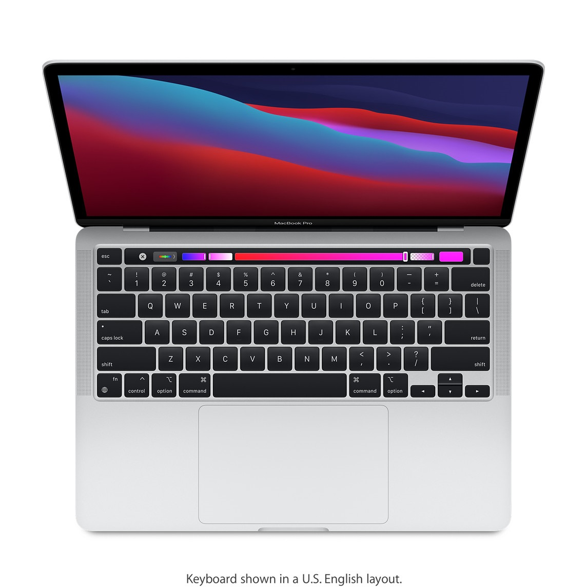
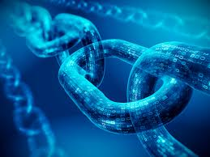
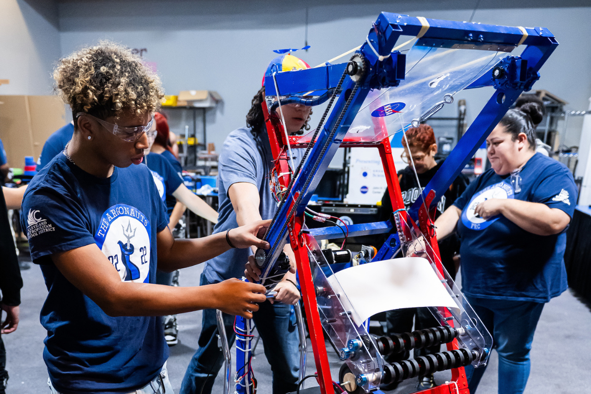

Febuary 20, 2024 - Macbooks
The Macbook is one of the biggest names when it comes to computers, being the only eligible competitor against the PC for decades. It is a staple in technological evolution as a whole. Every few years Apple, the creator of the Macbook, has released a new and improved version of the revolutionary computer to keep customers coming back to the Macbook as their computer of choice.
HistoryMost major online stores starting from BestBuy to Amazon sell macbooks but they sell them at different prices depending on its condition, specs and age. It is a brand name that is surrounded by three different Apple Macintosh notebook-style laptop computers. Introduced in 2006, macbooks rely on Apple’s macOS to bring customers the unique apple experience through a desktop. Even though you can only find Macbook Pro and the MacBook Air in apple store’s Two separate version of the base model have existed since 2006, but have been discontinued.
First Generation MacbooksThe first generation of the Macbook Pro was released on January 10th, 2006 and costed 1,999$.It had a Webcam, Apple Remote, Front Row and iWeb software and more. Unfortunately it was discontinued in February 2012. It wasn’t until 2008, that the slim aluminum body design that we all know today, was incorporated into the Macbook along with its iconic black keyboard. It was branded as the thinnest laptop of its time making it not only a technological force but also an aesthetically pleasing computer. Apple called it the Macbook Air. These design features made their way into future Macbook and Macbook Pros. Even now, with the most recent fourth generation Macbook, the same design features can be easily found.
Febuary 27, 2024 - Motherboards
 What is a Motherboard?
What is a Motherboard?
The motherboard is the largest circuit board that can be found in any computer. It is the central component that distributes electrical power to all the other parts of the computer such as the RAM, CPU and GPU. They hold all the inputs for hardware inside and outside of the case such as the keyboard and mouse. Motherboards are made in all different styles and sizes that vary depending on the chassis and other components that anyone would want in their system. The other components of a computer must be compatible with the motherboard in order for them to function properly. For example, motherboards of a certain brand and also generations (the latest to oldest version) will not be as versatile as a hard drive. They are typically the first part of a computer you buy when building a computer from scratch.
HistoryThe oldest motherboard for personal computers included fewer real components . The Central Processing Unit and card ports were included on the first ever IBM Pc motherboard. Users put various components like memory and controller for floppy drives into the provided slots.Compaq became the first company to use a mother that was used based on what IBM designed . They were very successful with that which led other companies to follow even though it was a risky move. Eventually , Intel had a dominant share of the personal motherboard. Asus, Gigabyte Technology and Micro Star International became the three most influential companies in this industry.
March 19, 2024 - Artificial Intelligence
What is Artificial Intelligence?
Artificial intelligence or AI is computers created to simulate human behavior that when paired with other technologies can perform and complete tasks. The goal of artificial intelligence is to replace humans in jobs that would typically require human intervention. The key difference between a robot and AI is that robots are built on a series of instructions that the robot will perform exactly how it is programmed to. Artificial intelligence on the other hand can learn and change how it approaches challenges based on past experiences. This is the key factor which makes it a very human-like technology. Artificial intelligence today is at a whole different level than what was possible in the past decade. It can now process and generate everything including images, videos, sounds, actions and words.
Strong vs Weak AIWeak AI which is also known as Narrow Ai is a Ai trained to perform specific tasks. It is related to most of the Ai that surrounds us today. Strong Ai is made of artificial general intelligence also known as AGIand artificial super intelligence which is ASI. AGI is a theoretical form of AI where a machine would have an intelligence equal to humans, It would be self aware with consciousness that has the ability to solve problems , learn and plan for the future . While Strong AI is still in the making , that doesn't mean AI researchers aren’t also exploring its development.
April 23, 2024 - Blockchains
What is a Blockchain? Blockchains are databases that allow for information to be transferred via network. Blockchains are useful because of their chain-like structure which allows them to be chronologically consistent everytime information is transferred. The data cannot be modified without direct permission from the network making it a safe way to authorize payments, share private information and more along the same line.
Why is Blockchain Important?Traditional databases have some problems when it comes to keeping track of financial transactions . let's say you’re selling a house. Once the money changes hands, the buyer becomes the new owner. Both the buyer and the seller can write down what happened, but we can’t really trust either of them. The seller might say they haven;t gotten the money. To avoid possible legal trouble, we need someone trusted to watch over and approve transactions. But having this central authority makes things complicated and makes the system vulnerable. If someone hacks into the central database, both the buyer and the seller can be in trouble
Common Uses of BlockchainBlockchains are seen all over the world in all different types of industries. For example it can be seen in retail for trades and transactions between suppliers and buyers. The movement of products must be safe and secure to ensure that companies don’t lose money to people looking to steal their information/products. Another common example is in the entertainment industry where copyrighted information must be transferred over networked to sites and companies.
May 21, 2024 - Robotics
What is Robotics? Robotics is a form of engineering that encompasses the entire design, manufacturing and application of robots which is an automatically operated machine that carries out a series of tasks given by the operator. Robots today can be seen in almost every aspect of life making the study of robotics a very current and important aspect of life. Robots are sometimes thought to just be machines that resemble humans. Though some do, which are called androids, not all robots have to. Robots can do anything from automated cars, to mechanical dogs and everything in between.
Implication of AI with RobotsDespite what you may think, robots and AI are completely separate things. While AI is a self learning software that can be programmed into robots, robots simply carry out whatever they are programmed to do. AI is now being implemented into robots making some really powerful computers, beginning to seem more and more human-like. With the AI brain, robots can learn from past experience and make decisions based on the information it learns.
Types of RobotsHealth: Robots in the healthcare industry can do everything like assisting in surgery to helping with physical therapy to help transport patients to move throughout the hospitals and delivering essentials like medication. They have helped fight pandemics like covid. Manufacturing: This was the first field to adopt robots like automobile assembly lines machines . They handle various tasks like steel cutting, food packaging and welding. Military : These robots handle dangerous tasks. For example the Centaur , an explosive detection robot that looks for mines so that the soldier around can travel safely. These robots are more difficult to build but are the most effective in the field .
May 28, 2024 - IoT
 What is the IoT?
What is the IoT?
IoT stands for Internet of things. It refers to a series of connected devices that communicate with one another along with the cloud. It can be thought of as how everyday things are integrated with the internet and connect with one another. The world has come a long way in terms of devices and the internet. From slow bandwidths and limited information being able to be transferred on the internet, to fast reliable technology that can be found in every aspect of our daily lives. The tech industry has been focusing on filling our homes, workplaces, and offices with as many IoT connected devices as possible. Making our spaces smarter and easily accessible for data to and from the internet. Collectively this is called the IoT.
How does it work?Smart devices :This is a device , like a television, security camera or exercise equipment that has given computing capabilities. It takes data from the environment where it is installed and communicates data over the internet.
IoT applications : A collection of services and software that takes data received from various IOT devices. It uses Artificial Intelligence and makes decisions based on what it learned. These decisions are communicate back to the IOT device and the devices responds to the question
Graphical user interface : The IOT devices can be worked through a graphical user interface. Some examples are mobile applications and website that can be used to register/controle smart devices